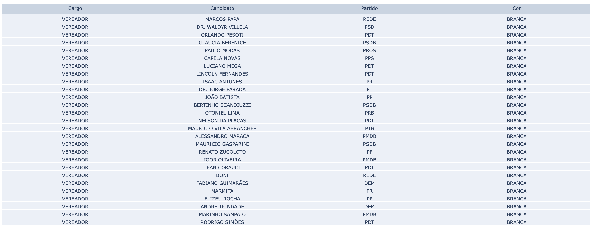
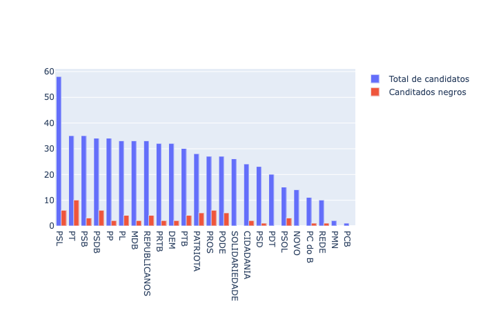
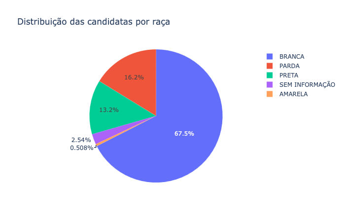

Dos 623 candidatos que concorrem as eleições municipais de Ribeirão Preto, somente 64 se autodeclararam pretos no registro de candidatura. Os dados são do Tribunal Superior Eleitoral. Um número 9,3 por cento menor em comparação ao pleito de 2016.
Para Cassiano Figueiredo, advogado e ativista antirracista, há dois grandes problemas na questão. “Um deles é a ausência do autorreconhecimento como negro ou negra”, diz. “Isso obsta diretamente a participação da comunidade negra de forma consciente na vida política”.
Além disso, Figueiredo comenta sobre a falta de incentivo dos próprios partidos políticos e a existência de correntes partidárias que negam o racismo. “A decisão do Ministro Lewandowski de equiparar os recursos é muito positiva nesse sentido”, adiciona.

A baixa representação fica mais acentuada se levarmos em consideração os eleitos: não há nenhum negro na Câmara Municipal de Ribeirão Preto. De acordo com o advogado, isso afeta negativamente a comunidade negra no âmbito local.
“Contudo, não basta apenas que parlamentares negros ocupem vagas no legislativo, como já aconteceu no passado, sem que estejam empenhados em combater as expressões do racismo na cidade”, comenta.
O Partido Social Liberal, PSL, é o que conta com a maioria de candidatos nestas eleições, com 71 concorrentes. Porém, uma pequena parte se autodeclararam negros, sendo apenas 4 postulantes. O Partido dos Trabalhadores, PT, é o que conta com mais candidatos negros: 10 do total de 35 concorrentes.
Se reduzirmos para as mulheres, os números são menores ainda. Apenas 3,5 por cento do total de candidatos são mulheres negras. “O grande problema é que os partidos políticos vinculados à política tradicional, das mais variadas correntes ideológicas, não estão habituados e nem comprometidos a fomentar espaços para negras e negros formularem política para as pessoas negras ocuparem espaços”, cita.
O ativista ainda ressalta o fato de que Ribeirão Preto não teve nenhum chefe do executivo negro. “Penso que falta consciência de que pessoas negras criem identidade e apoiem pessoas também negras ou que tenham compromisso com os seus problemas e façam política também para essa população”, finaliza.